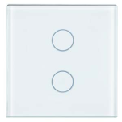
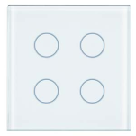
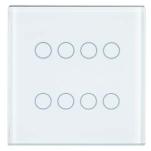

触摸传感器玻璃
- Sensitive pair of touch areas for vertical operation
- Per touch area selectable function, scene controller
- Round, transparent circle per touch area to the RGB LED background lighting
- Glass cover with chrome border
- Proximity sensor
- For plugging onto a bus transceiver module (BTM) or a fl ush-mounting actuator with bus transceiver module (BTM)
 | UP 211, 触摸传感器玻璃，单个
订单号： 下载数据表：5WG12112DB01 |
 | UP 212, 触摸传感器玻璃，双层
订单号： 下载数据表：5WG12122DB01 |
 | UP 213, 触摸传感器玻璃，四重
订单号： 下载数据表：5WG12132DB01 |